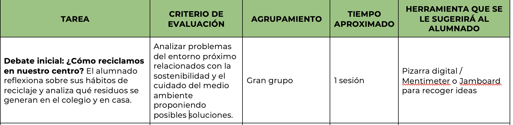
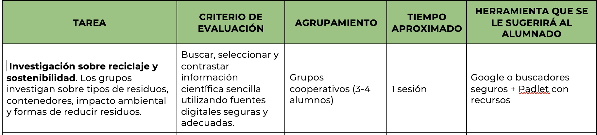
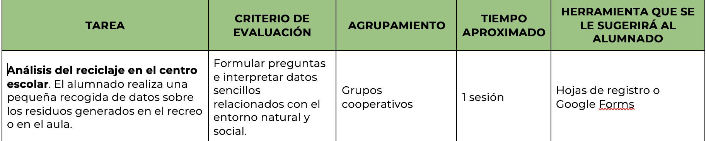
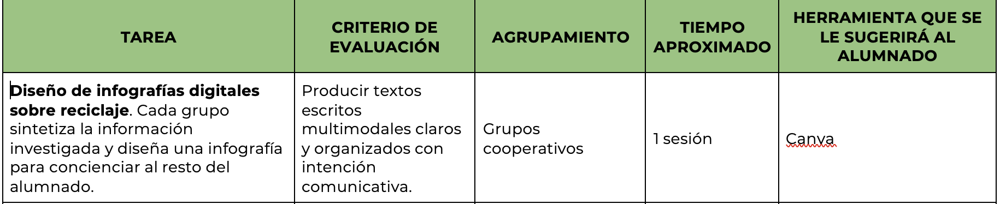
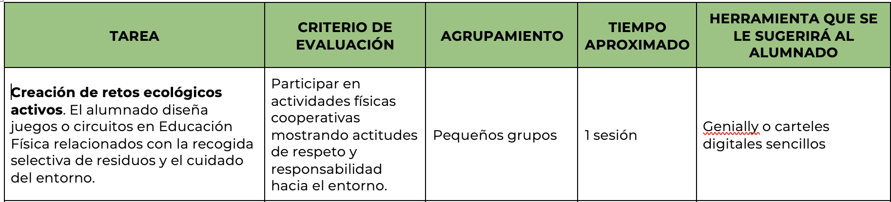
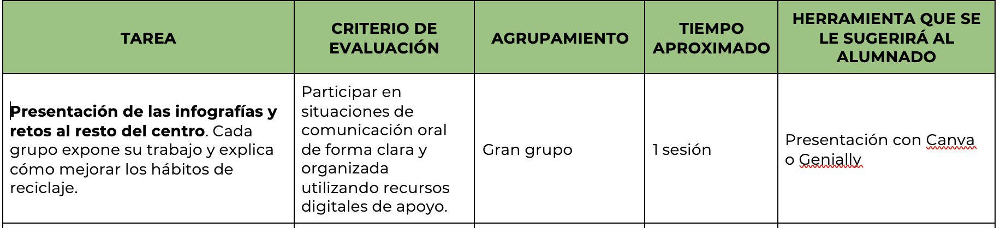
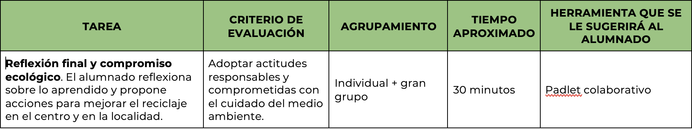

Relación de las tareas con los criterios de evaluación
A continuación, esta guía didáctica muestra como relacionamos las distintas tareas realizadas con los criterios de evaluación, como mencionamos en otro apartado anteriormente:
Tarea 1:

Tarea 2:

Tarea 3:

Tarea 4:

Tarea 5:

Tarea 6:

Tarea 7:

Consideraciones.
¿Cómo consideras que podrían resolverse los problemas técnicos que pudieran surgir con el uso de tecnología en el aula?
Durante el desarrollo de actividades con herramientas digitales pueden surgir diferentes dificultades técnicas, especialmente en contextos rurales donde la conectividad a internet puede ser limitada. Para afrontar estas situaciones se adoptarán diferentes estrategias preventivas y de resolución:
En primer lugar, se realizará una breve explicación inicial sobre el uso de las herramientas digitales, especialmente Canva, para facilitar que el alumnado se familiarice con su funcionamiento antes de comenzar la tarea.
En segundo lugar, se fomentará el aprendizaje cooperativo, de manera que los alumnos con mayor competencia digital puedan ayudar a sus compañeros cuando aparezcan dificultades técnicas.
También se prevé organizar al alumnado por grupos compartiendo dispositivos, lo que facilita la colaboración y reduce los posibles problemas derivados del acceso a equipos.
En caso de fallos de conexión a internet, se dispondrá de alternativas analógicas, como el diseño previo de las infografías en papel, que posteriormente podrán digitalizarse cuando la conexión lo permita.
Por último, el docente actuará como guía y facilitador, ayudando a resolver incidencias técnicas básicas y promoviendo que el alumnado desarrolle habilidades de resolución de problemas tecnológicos, un aspecto fundamental dentro del desarrollo de la competencia digital.